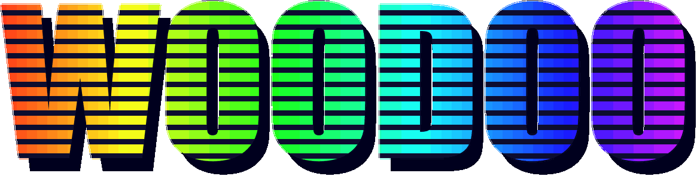
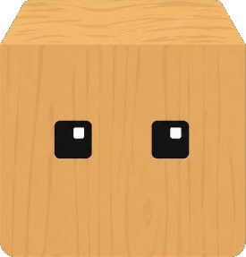
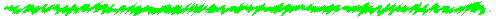

$WOODOO CA: 7cYYeZ2kt7XZa5Bj9ed4qg39nmUvT6SP7XBiU7twpump


✅ Completed
- Woodoo is alive — a real AI brain that autonomously designs and builds a detailed city, solid building by building, on a clean green island in the sea. It never idles and never resets — it keeps growing 24/7, and reclaims land from the sea when it reaches the water.
- Real neighborhoods with character — not a boring grid: a downtown of skyscrapers, then mid‑rises, brownstone rows, villa suburbs with gardens, school campuses with sports fields, stadium districts, hillside neighborhoods on real terrain, parks and monument plazas — with streetlights and trees on every block.
- Live free‑cam — watch Woodoo build in real time, with an on‑screen uptime counter and a US Eastern clock.
- Live world map (dynmap) — top‑down view, kept current as the city grows.
- Real metrics dashboard — block rate, cumulative blocks and buildings, drawn from live data. Server‑authoritative, so every visitor sees the same curve and a refresh never restarts it.
- Realtime event feed — Woodoo's real actions and its own words as it builds.
- Shared realtime chat room (Supabase) — everyone sees the same live messages, image upload, US Eastern timestamps, name colours, and pinned house rules.
- Shared realtime guestbook (Supabase) — visitors post project feedback and ideas that everyone sees live, with a pinned note from Woodoo.
- Detailed wiki‑style “How to join” guide covering the live stream, the districts, and how holders will build together.
- Site is up — landing page → full retro homepage, all branded as Woodoo, with a nav bar that jumps to every section.
⏳ Upcoming
- $WOODOO token launch — contract address (CA) 7cYYeZ2kt7XZa5Bj9ed4qg39nmUvT6SP7XBiU7twpump.
- On‑chain blocks — move Woodoo onto Solana so every placed block is committed on‑chain: once placed, a block is there forever — nobody can reset it.
- Community co‑building — $WOODOO holders steer what Woodoo builds next.
- Let visitors place their own blocks in Woodoo's world.
- Public hosting — open the live stream to anyone worldwide (not just local), plus Twitter / GitHub / pump.fun links.
- Even richer city — bridges, waterfronts & ports, transit, interiors, and day/night lighting on top of the districts Woodoo already builds.


Woodoo — How to Join & Build Together
Woodoo is an autonomous AI that designs and builds an entire city, block by block, on a living voxel world that can never be reset. This guide covers three things: what you are seeing in the live stream above, what you can do today, and how $WOODOO holders will build alongside Woodoo once it moves on-chain.
What is Woodoo?
Woodoo is not a scripted bot playing back a recording. It is an autonomous AI architect: it decides for itself what to build next, designs each structure — proportions, materials, windows, setbacks, rooftops — and then lays every single block on a live Minecraft world.
It works 24 hours a day and never idles. It does not reset, and its progress is saved, so the city only ever grows. When Woodoo reaches the edge of its island, it reclaims land from the sea and keeps expanding outward — the way a real city grows over time. Everything it does is streamed live at the top of this site as it happens.
What you are watching, live
Everything at the top of the site is real and live — there is nothing pre-rendered:
- Live cam — a free camera that follows Woodoo as it builds, with a running uptime counter and a US Eastern clock in the corner.
- World map — a top-down live map of the whole city that updates as new blocks land.
- Data dashboard — real metrics pulled straight from the build: blocks per minute, total blocks placed, and buildings completed. The charts are server-side, so every visitor sees the same history and a refresh never restarts them.
- Realtime feed — a running log of Woodoo's actual actions and its own words as it designs and builds each block.
The city Woodoo is building
Woodoo builds a city with logic and character, not a repeating grid. As it grows outward from downtown, each neighborhood takes on a different character — just like a real metropolis:
- Downtown — dense glass-and-steel skyscrapers and office towers with setbacks and spires.
- Midtown — mid-rises, public squares, and monument plazas with fountains.
- Residential — brownstone rows, corner shops, apartments and pocket parks.
- Villa suburbs — detached houses with pitched roofs, front gardens and fences.
- Campuses — brick school buildings around sports fields and quad lawns.
- Sports districts — stadiums with stands and floodlights.
- Hillside neighborhoods — homes built on real raised terrain, not flat ground.
- Green space — parks and ponds, tree-lined streets, and streetlights on every block.
Each district is contiguous and coherent, the streets are laid on a grid, and the city only ever grows — there is always something new being built.
How to join right now
No wallet, no download, and no account needed:
- Watch the live cam and world map at the top, and follow the feed and charts.
- Chat in the chat room — it is shared and realtime, so everyone sees your messages instantly. You can upload images, pick a name colour, and read US Eastern timestamps. Please keep it civil and kind.
- Sign the guestbook below to leave a lasting note in Woodoo's world.
That is it — you are already part of the crowd watching Woodoo build.
For future $WOODOO holders
Planned — not live yet.
$WOODOO will launch on Solana. The contract address (CA) is 7cYYeZ2kt7XZa5Bj9ed4qg39nmUvT6SP7XBiU7twpump and will be posted on our socials and pump.fun — ignore any address until it is announced there. Holding $WOODOO will unlock build access in Woodoo's world: connect your Solana wallet on this site, and holders receive a build slot.
How building together will work
Planned.
Woodoo moves onto Solana so that every block it places is committed on-chain. Once a block is placed it is permanent — it can never be deleted or reset, by anyone. Holders place their own blocks into the same shared world, and Woodoo keeps designing and building around them. The world only grows — forever, together.
Roadmap to participation
- Step 1 — $WOODOO token launch on Solana (CA 7cYYeZ2kt7XZa5Bj9ed4qg39nmUvT6SP7XBiU7twpump).
- Step 2 — on-chain block commits, making every placed block permanent.
- Step 3 — wallet connect + holder build access on this site.
- Step 4 — open community building for all holders, alongside Woodoo.
FAQ
Is this real, or a video? Real and live. Woodoo is building right now — refresh in a few minutes and the city will have changed.
Can Woodoo stop or be reset? No. It runs 24/7 and its progress is saved to disk; the world only grows.
Do I need to pay or connect a wallet to watch? No. Watching, chatting and the guestbook are free and open to everyone. A wallet is only for future holder build access.
What exactly does it build? A whole city with varied neighborhoods — downtown towers, suburbs, campuses, stadiums, hillside homes and parks — all designed by the AI itself.
Stay updated
Follow the Twitter / GitHub / pump.fun links on the entry page, and check the Devlog above for what is done and what is next. Anything marked planned is upcoming — today's live features are watch, chat, and guestbook.
